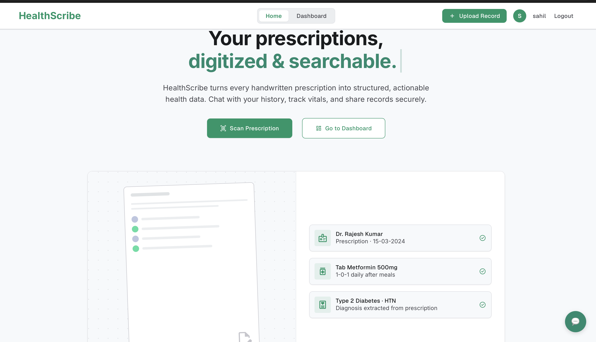

✦
HealthScribe
shipping · 2026a full-stack medical-records intelligence platform.
extracts and verifies handwritten prescriptions via a hybrid OCR pipeline (Sarvam AI + Gemini 2.5 Flash) and provides grounded historical Q&A with allergy safety guardrails. swap to MMR retrieval in ChromaDB doubled clinical-category coverage and cut duplicate-context redundancy 62% → 8%, validated via a Gemini-as-a-Judge framework.
- 01benchmark a hybrid OCR pipeline against a single-model baseline
- 02ship MMR-reranked RAG with eval harness on 20 Rx
- 03live allergy-drug conflict detection + QR health profile
